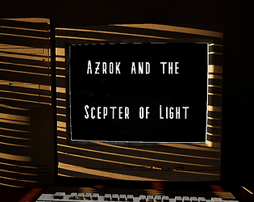
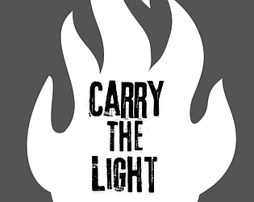

My Games
- This is a short horror game I made for the Scream Secrets Game Jam 2024.
I made this game in about 6 days and had a lot of fun!
The theme was "It was here all along."
The game plays as a text-based RPG within a 3D Horror game. I think the hardest part
was learning how to create the widget component and then capture the view target and
use that as a texture for the dynamic material of the computer screen.
(NOTE: This game is currently in active development and is being updated with
new content and bug fixes on a regular basis.)

- This was my first ever completed game I submitted for the
Goedware zeroUI Game Jam 2024. I made this game in about 7 days.
The theme was "Light and Darkness."
Honestly it's a terrible buggy mess that doesn't offer much in the
way of entertainment value, but it was a fun (and stressful) experience.
I think the hardest part of this one was learning how to transfer
possession between the different characters.
